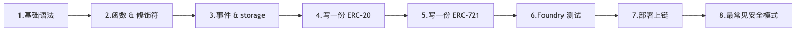
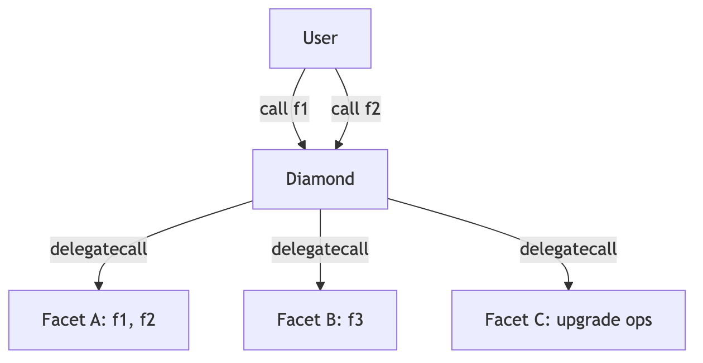

TL;DR：写过 JS / Python 没碰过静态类型语言的 Web2 工程师，照主线读完两周，能写出可被审计的 ERC-20 / ERC-721；要深入研究 Yul、Diamond、storage 二进制级、EIP-7702 字段细节，去附录 A-H。
写 Solidity 跟写 JS 最大的不同：你写完一行代码，编译器把它翻成字节码丢上链——改不了、删不掉、出 bug 烧的是真钱。这本模块用主线 8 章把你带到「能写一份审计员愿意签字的 ERC-20」的水平，再用附录 A-H 把所有不上主线的硬核话题归档好，需要时再翻。
✦ 承上：模块 03 把 EVM 拆到字节码、stack / memory / storage、gas 计费的底层；本模块上一层楼——用 Solidity 写出能跑在那台 EVM 上的合约。每个 storage 写、每个 calldata 参数、每个 unchecked 块，背后都是模块 03 那张 gas 表在算账。
版本基线：Solidity 0.8.28、Foundry stable、OpenZeppelin v5.5.0、Solady v0.1.26。via_ir = false（0.8.28-0.8.33 有清空 bug，2026-02-11 披露）。
主线 8 章（按顺序读）：

附录（按需查）：A. Storage layout 二进制 / B. Yul 内联汇编 / C. 替代语言 / D. Diamond / E. SSTORE2 与 transient storage 高级用法 / F. EIP-7702 字段对照 / G. Permit2 完整字段 / H. Uniswap V2 Pair walkthrough。
TL;DR：学 Solidity 的值类型、引用类型、storage / memory / calldata 三种数据位置；为什么写错位置烧的是真钱；学完能看懂 OZ ERC-20 里每个变量声明在干嘛。
写 JS 时变量没类型，引擎替你处理一切。Solidity 是静态类型 + 三种内存位置 + 32 字节对齐——每个写错的位置都对应一笔多花的 gas 账单。
address 是一串 20 字节的 ID，跟邮政编码一样——它本身只是定位，不告诉你那里有什么。msg.sender 是当前这笔调用的「快递员」（谁正在调你的函数）；msg.value 是他随包送来的 ETH 数量。
function deposit() external payable {
balances[msg.sender] += msg.value; // 谁来 = msg.sender，送多少 = msg.value
}
陷阱：tx.origin 是「发起整条调用链的最初 EOA」，不是 sender。永远用 msg.sender 做鉴权，tx.origin 在多层合约调用下会被钓鱼合约冒充。
receive vs fallback：合约要能接 ETH，必须显式声明 receive() external payable {}（仅触发于纯 ETH 转账 + 空 calldata）或 fallback() external payable {}（兜底，匹配不到任何函数 selector 时进入，可带 calldata）。两者都没写 → 任何向合约直接转账的 tx 都 revert。普通 external payable 函数只能在用户主动调用该函数时收 ETH，不响应纯转账。
| 类型 | 字节 | 用在哪 |
|---|---|---|
bool |
1 | 真假，但占整字节（不是 1 bit） |
uint256 / int256 |
32 | 默认 checked，溢出 revert |
uint8 ~ uint128 |
1-16 | 小整数，用来 packing |
address |
20 | 地址 |
address payable |
20 | 可收 ETH 的地址 |
bytes32 |
32 | 定长字节，常做 hash key |
0.8.x 起算术默认 checked，溢出直接 revert（panic 0x11）。要省 gas 用 unchecked { ... }，但只在你 100% 知道不会溢出时——比如循环里的 ++i。
storage 像合约的硬盘——贵、慢、持久。每次写一个新 slot 烧 22100 gas（够一笔以太坊转账）。 memory 像 RAM——临时、便宜、函数返回就没了。 calldata 像只读 ROM——最便宜、还不让你改、外部函数参数默认就是它。
引用类型（数组、struct、mapping、string、bytes）必须显式声明位置：
function update(uint256[] calldata input) // 只读外部数组：最便宜
external
{
uint256[] memory tmp = new uint256[](3); // 临时数组：放 RAM
User storage u = users[msg.sender]; // 改链上记录：拿 storage 别名
u.balance += input[0];
}
struct User { uint256 balance; }
mapping(address => User) public users;
function bad() external {
User memory u = users[msg.sender]; // 复制一份到 RAM
u.balance += 100; // 改 RAM，链上没动
}
function good() external {
User storage u = users[msg.sender]; // storage 别名 = 指针
u.balance += 100; // 真改链上
}
storage → memory 是复制（烧 gas）。storage → storage 是指针别名（几乎免费）。这条规则你要刻进肌肉记忆。
JS 里 obj[key]，Solidity 里 m[key]。mapping(K => V) 占 1 个 slot 但 slot 本身永远是 0——元素的实际位置由 keccak 算出来（附录 A 详解二进制级）。主线只需要会用：
mapping(address => uint256) public balances;
mapping(address => mapping(uint256 => bool)) public claimed; // 嵌套合法
uint256[] public history; // 动态数组：可 push / pop
uint256[10] public ranks; // 静态数组：固定长度
mapping 不能遍历（没 length），需要遍历就额外维护一个数组。
构造时确定、永不变的值用 immutable。完全 hardcode 的值用 constant。两者都不占 storage（嵌进字节码），免去每次 SLOAD：
contract Vault {
address public immutable ASSET; // 部署时定，运行时只读
uint256 public constant FEE_BPS = 50; // 编译时定
constructor(address a) { ASSET = a; }
}
省 gas、读起来意图清楚——审计员看到 immutable 就知道不会变。
tx.origin 永远不做鉴权，用 msg.sender；② storage 是别名指针，memory 是复制；③ 不变的值用 immutable。Counter 合约，用 mapping(address => uint256) 给每个用户记次数，外部函数只用 external + calldata。TL;DR：学函数四个修饰词（public/external/view/payable）、modifier 像守门员、错误用 custom error 不用 require 字符串；学完能正确给 ERC-20 的 mint 函数加权限。
写 JS 函数没修饰词，调用方法只有「能调 / 不能调」。Solidity 一个函数签名能挂 4 个修饰词——选错一个，多花几百 gas 或者权限漏一个洞。
| 关键字 | 谁能调 | ABI 暴露 |
|---|---|---|
public |
任何人（外部 + 内部子合约） | 是 |
external |
仅外部 tx 或 this.f() |
是 |
internal |
本合约 + 子合约 | 否 |
private |
仅本合约 | 否 |
只对外的函数永远写 external。public 会把引用类型参数复制到 memory，external 直接读 calldata，单笔省几百 gas。
function balanceOf(address u) external view returns (uint256); // 只读
function add(uint a, uint b) external pure returns (uint); // 不读不写
function deposit() external payable; // 可收 ETH
view 不写 storage、可读；pure 连 block.* msg.* 都不读；payable 是接收 ETH 的入场券，缺了它合约直接拒收。链上读取 view / pure 函数走 eth_call，不上链不烧 gas。
modifier 像守门员——函数被调用前先过它一关；过不了就 revert，gas 已花的不退。_ 是函数体展开的位置。
modifier onlyOwner() {
if (msg.sender != owner) revert NotOwner();
_; // 函数体在这里展开
}
function withdraw() external onlyOwner {
(bool ok, ) = payable(owner).call{value: address(this).balance}("");
require(ok, "ETH transfer failed");
}
为什么不用 .transfer()：它强制 2300 gas stipend，Istanbul 硬分叉后 SLOAD 涨价 + EIP-1884 让多签 / proxy 钱包的 fallback 普遍超出 2300 → 转账 revert。统一改用 call{value: x}("") 并 require(ok)，§8.1 主线还会再讲一次 CEI 防重入。
OZ v5 的 Ownable / AccessControl 已经把守门员写好且审计过——生产里直接 inherit，不要自己写。
error InsufficientBalance(uint256 available, uint256 needed);
function withdraw(uint256 amt) external {
uint256 bal = balances[msg.sender];
if (bal < amt) revert InsufficientBalance(bal, amt);
// ...
}
老风格 require(bal >= amt, "balance too low") 把字符串编进字节码，部署贵、运行也贵。新风格 4 字节 selector + 参数，前端拿到能精准展示。OZ v5 全库切到了这个风格。
try IERC20(token).transfer(to, amt) returns (bool ok) {
require(ok, "transfer returned false");
} catch {
// 调用 revert 了，走这里——但 gas 已经被耗
}
只能用在外部合约调用上（同合约函数 revert 直接冒泡）。要点：被调方按 EIP-150 拿走你 63/64 的剩余 gas，所以 catch 块里别指望还有多少 gas 可花。
try/catch 的局限：① 只能 catch Error(string) / Panic(uint) / 未知 bytes 三类标准 revert；② OOG（out-of-gas）会冒泡到外层无法被捕获；③ 调到不存在合约（地址里没代码）的低层 revert 也不进 catch；④ 嵌套场景里子 call A → B 中 B 的 revert 不会被 A 这一层之外的 try/catch 捕获——只有最外层包住 A 的 try 才接得住。需要"无论如何不让外层失败"时，请用 address.call{...}(...) 自己判断 bool ok。
view 是编译期检查，不是运行时强制。一个用汇编 sstore 的函数挂 view 标签照样能写状态。审计别人的代码时，看到 view 仍要追每个外部调用——它可能 delegate 到一个改 storage 的实现。
external；② 权限用 OZ 的 Ownable / AccessControl；③ 错误用 error，不用 require(c, "string")。setFee(uint256) 函数，只允许 owner 调用，超过 1000（10%）revert 自定义错误。TL;DR：event 是链上日志（写 1500 gas），storage 是链上硬盘（写 22100 gas）；用户能看就该走 event；学完能写出符合 ERC-20 标准的 Transfer / Approval 事件。
链上数据有两个去处：合约要读的进 storage（贵），只给链下索引的进 event（便宜十倍以上）。挑错位置，每笔交互多花用户几千 gas。
event 像链上日志——写一行就在 EVM 的 logs 区域留下记录，前端订阅得到，合约自己读不到。所有「用户看，合约不看」的数据都走 event：转账历史、参数变更、治理投票。
event Transfer(address indexed from, address indexed to, uint256 value);
event Approval(address indexed owner, address indexed spender, uint256 value);
function _transfer(address from, address to, uint256 amt) internal {
balances[from] -= amt;
balances[to] += amt;
emit Transfer(from, to, amt); // 链下能查，合约不用记账
}
加 indexed 的字段进 topic（最多 3 个），可被前端按值筛选：「查 alice 的所有转账」。不加 indexed 进 data 区，链下只能解码不能筛。ERC-20 标准：from/to indexed，value 不 indexed。
注意 string / bytes 加 indexed 时，topic 里存的是 keccak256(原文)——前端拿到 hash 反查不出原文，需要再非 indexed 字段保留原文。
uint256、mapping、struct 字段——只要写在合约的状态变量区就是 storage。每个变量按声明顺序铺到一个 32 字节 slot。第一次写一个 slot：22100 gas；改一个写过的 slot：5000 gas；读冷 slot：2100 gas，热 slot：100 gas。
contract Token {
mapping(address => uint256) public balances; // slot 0（mapping 占位）
uint256 public totalSupply; // slot 1
string public name; // slot 2（短串：slot 自身存 length×2 + 数据；length>31 时数据另存 keccak256(slot) 起的连续位置，详见附录 A）
}
写 storage 是合约里最贵的操作之一。每加一个状态变量都问自己：「合约自己读吗？」不读就走 event。
每个 slot 32 字节。多个 ≤ 32 字节的字段紧挨着声明，编译器自动打包到同一 slot：
contract Packed {
uint128 a; // slot 0, 占 16 字节
uint128 b; // slot 0, 占剩下的 16 字节 → 1 slot
uint256 c; // slot 1
}
contract NotPacked {
uint128 a; // slot 0
uint256 c; // slot 1（c 放不进 slot 0 剩余 16 字节，开新 slot）
uint128 b; // slot 2
}
部署省 1 个 slot ≈ 20000 gas。但只在你真在用 uint128 时才打包——用 uint128 装其实只需 uint64 的值是浪费类型空间。二进制级 layout 推导和 forge inspect storage-layout 用法见附录 A。
mapping(K => V) 占 1 个 slot 但 slot 里永远是 0——元素 m[k] 的实际位置由 keccak 算出。主线只需要知道：mapping 不能遍历、能被「无限」键访问、不存 length。
动态数组 T[] 自身的 slot 存 length，元素从另外算出来的位置连续铺。静态数组 T[N] 直接铺 N 个 T 没有 length。要算精确位置见附录 A。
tstore / tload 在事务内有效，事务结束自动清零，写一次 100 gas。OZ v5.2+ 的 ReentrancyGuardTransient 把锁开销从每次 ~10000 gas 降到 ~200。主线只需要会用 OZ 现成的，不需要自己写汇编——细节进附录 E。
indexed 才能被前端按值过滤（最多 3 个）；③ 状态变量按声明顺序铺 slot，小整数挤一起省 gas。SimpleVault，存 ETH 时 emit Deposited(address indexed user, uint256 value)；提现时 emit Withdrawn(...)。进入第 4 章前先把三种"非合约"代码单元区分清楚——后面 IERC20 接口、import {ERC20} 抽象基类、SafeERC20 库全要靠它们。
IERC20(token).transfer(...)）。ERC20.sol 本身可部署，但 AccessControl 等是 abstract。SafeERC20、MerkleProof、SignatureChecker。第 4 章起 IERC20 import {ERC20} using SafeERC20 for IERC20 全靠这三个机制。
TL;DR：ERC-20 是同质化代币的标准接口；用 OZ v5 继承 + 加你自己的 mint 限额；学完能写一份审计员愿意签字的代币合约。
USDT、USDC、UNI 全是 ERC-20。这套接口包含 transfer / approve / transferFrom / allowance / balanceOf / totalSupply 六个函数和两个事件。自己实现 transferFrom 是面试题，不是生产代码——OZ v5 的 ERC20.sol 处理过 USDT 不返回 bool、fee-on-transfer 差额、ERC-777 hook 重入等十年踩出来的坑。
// SPDX-License-Identifier: MIT
pragma solidity 0.8.28;
import {ERC20} from "@openzeppelin/contracts/token/ERC20/ERC20.sol";
contract MyToken is ERC20 {
constructor() ERC20("MyToken", "MTK") {
_mint(msg.sender, 1_000_000 ether); // 部署者拿全部 supply
}
}
29 行就是一份合规 ERC-20。_mint 是 OZ 内部函数，自动 emit Transfer(address(0), to, amt) 表示「凭空铸造」。
写完上面这版你就有疑问：「凭什么部署者就能凭空铸币？」生产合约要权限控制。OZ 的 AccessControl 比 Ownable 更灵活——多角色管理、可撤销。
import {ERC20} from "@openzeppelin/contracts/token/ERC20/ERC20.sol";
import {AccessControl} from "@openzeppelin/contracts/access/AccessControl.sol";
contract MyToken is ERC20, AccessControl {
bytes32 public constant MINTER_ROLE = keccak256("MINTER_ROLE");
constructor(address admin) ERC20("MyToken", "MTK") {
_grantRole(DEFAULT_ADMIN_ROLE, admin);
_grantRole(MINTER_ROLE, admin);
}
function mint(address to, uint256 amount) external onlyRole(MINTER_ROLE) {
_mint(to, amount);
}
}
onlyRole 守门员挡掉非 MINTER 调用。审计员看到的第一件事就是这个 modifier——缺了它，部署 5 分钟后被白嫖。
把无上限的 mint 加一个 cap。error 比 require 字符串省 30% gas：
error MintCapExceeded(uint256 requested, uint256 cap);
uint256 public immutable MINT_CAP;
constructor(address admin, uint256 cap) ERC20("MyToken", "MTK") {
MINT_CAP = cap;
_grantRole(DEFAULT_ADMIN_ROLE, admin);
_grantRole(MINTER_ROLE, admin);
}
function mint(address to, uint256 amount) external onlyRole(MINTER_ROLE) {
require(amount <= MINT_CAP - totalSupply(), "exceeds cap");
_mint(to, amount);
}
immutable 嵌进字节码、不占 storage、读 cap 不烧 SLOAD。
EIP-712 速览：以太坊里所有签名最终都是对 32 字节 hash 做 ECDSA。早期 dApp 直接让用户签 keccak256(abi.encode(...))，钱包只能显示 0xabc... 让用户盲签。EIP-712 把这个 hash 拆成结构化输入——domain（name / version / chainId / verifyingContract，绑定到本合约本链防重放）+ typed data（业务字段 owner / spender / value / nonce / deadline 等），钱包能解析后以人类可读的形式展示给用户。最终 hash = keccak256("\x19\x01" ++ domainSeparator ++ structHash)，OZ 提供 _hashTypedDataV4(structHash) 直接算。Permit / Permit2 / SIWE / 签名 voucher mint / 链下订单簿全用此规范——后面 §5.4 签名 mint、附录 G Permit2 都会复用。
老 ERC-20 用户买代币要先 approve 再 transferFrom，两笔 tx 等 24 秒。EIP-2612 用一个 EIP-712 签名替代 onchain approve——签名免费、即时。OZ 直接给你：
import {ERC20Permit} from "@openzeppelin/contracts/token/ERC20/extensions/ERC20Permit.sol";
contract MyToken is ERC20, ERC20Permit, AccessControl {
constructor(address admin)
ERC20("MyToken", "MTK")
ERC20Permit("MyToken")
{ /* ... */ }
}
继承顺序：基类在前（ERC20），扩展在后（ERC20Permit、AccessControl）——这是 OZ 文档的明确建议。
陷阱：permit 在 mempool 里可被 front-run（监听者抢先用同一签名调 permit，让你的 transferFrom 因 nonce 失效 revert）。永远把 permit + transferFrom 打包同一笔 tx（用 multicall 或 router），不单独广播 permit。
import {ERC20Burnable} from "@openzeppelin/contracts/token/ERC20/extensions/ERC20Burnable.sol";
contract MyToken is ERC20, ERC20Burnable, ERC20Permit, AccessControl { /* ... */ }
burn(amount) 销毁自己的；burnFrom(account, amount) 销毁授权过的。某些代币经济模型必备（销毁通缩、redemption 凭证）。
contract MyToken is ERC20, ERC20Burnable, ERC20Permit, AccessControl {
bytes32 public constant MINTER_ROLE = keccak256("MINTER_ROLE");
error MintCapExceeded(uint256 requested, uint256 cap);
uint256 public immutable MINT_CAP;
constructor(string memory n, string memory s, uint256 cap, address admin)
ERC20(n, s) ERC20Permit(n)
{
MINT_CAP = cap;
_grantRole(DEFAULT_ADMIN_ROLE, admin);
_grantRole(MINTER_ROLE, admin);
}
function mint(address to, uint256 amount) external onlyRole(MINTER_ROLE) {
if (totalSupply() + amount > MINT_CAP) revert MintCapExceeded(amount, MINT_CAP);
_mint(to, amount);
}
}
这就是审计员愿意签字的最小生产代币：明确权限、有上限、permit 免一次 tx、Burnable 提供退出路径。
pause() 功能（用 OZ 的 ERC20Pausable），暂停时禁止所有 transfer。TL;DR：ERC-721 是 NFT 标准（每个 tokenId 唯一）；OZ 给你了基础合约 + URIStorage + Royalty 扩展；学完能写一份带版税、有铸造权限的 NFT。
ERC-721 的核心：每个 tokenId 唯一，ownerOf(id) 返回唯一持有人。BoredApe、CryptoPunks、Uniswap LP NFT 全是 ERC-721。OZ v5 的 ERC721.sol 是事实标准。
// SPDX-License-Identifier: MIT
pragma solidity 0.8.28;
import {ERC721} from "@openzeppelin/contracts/token/ERC721/ERC721.sol";
import {Ownable} from "@openzeppelin/contracts/access/Ownable.sol";
contract MyNFT is ERC721, Ownable {
uint256 public nextTokenId;
constructor(address owner) ERC721("MyNFT", "MNFT") Ownable(owner) {}
function mint(address to) external onlyOwner returns (uint256 id) {
id = nextTokenId++; // 教学写法，从 0 起；生产惯例是 `++nextTokenId`，从 1 起——0 在不少前端 / 索引器里是"未设置"边界值
_safeMint(to, id);
}
}
_safeMint 比 _mint 多一步：如果 to 是合约，调用 onERC721Received 检查它能收 NFT——防止 NFT 被发到一个不会 transfer 出来的合约里永久锁死。
NFT 的图片、属性、描述放在 tokenURI(id) 返回的 JSON 里（通常 IPFS 地址）。OZ 提供 ERC721URIStorage：
import {ERC721URIStorage} from "@openzeppelin/contracts/token/ERC721/extensions/ERC721URIStorage.sol";
contract MyNFT is ERC721URIStorage, Ownable {
uint256 public nextTokenId;
function mint(address to, string calldata uri) external onlyOwner returns (uint256 id) {
id = nextTokenId++;
_safeMint(to, id);
_setTokenURI(id, uri);
}
}
如果所有 token 共享一个 baseURI（baseURI/0、baseURI/1...），override _baseURI() 返回 baseURI 即可，不用每个 token 单独存（省 storage）。
OpenSea / Blur 等市场识别 EIP-2981——卖家成交时按合约报价抽成给创作者：
import {ERC721Royalty} from "@openzeppelin/contracts/token/ERC721/extensions/ERC721Royalty.sol";
contract MyNFT is ERC721Royalty, Ownable {
constructor(address owner, address royaltyRecv, uint96 royaltyBps)
ERC721("MyNFT", "MNFT") Ownable(owner)
{
_setDefaultRoyalty(royaltyRecv, royaltyBps); // bps：500 = 5%
}
}
EIP-2981 是「市场愿意配合」的协议，不是链上强制——市场可以无视。但所有主流市场都遵守。
白名单如果存 mapping 太贵（每个地址 22100 gas）。改用 EIP-712 签名：owner 离线签 (to, tokenId, deadline) voucher，用户调 mintWithVoucher(voucher, sig) 兑换。
import {EIP712} from "@openzeppelin/contracts/utils/cryptography/EIP712.sol";
import {ECDSA} from "@openzeppelin/contracts/utils/cryptography/ECDSA.sol";
contract VoucherNFT is ERC721, EIP712 {
using ECDSA for bytes32;
bytes32 public constant VOUCHER_TYPEHASH = keccak256(
"MintVoucher(address to,uint256 tokenId,uint256 deadline)"
);
address public immutable signer;
mapping(uint256 => bool) public used;
error Expired();
error AlreadyUsed();
error BadSig();
constructor(address signer_) ERC721("VoucherNFT", "VN") EIP712("VoucherNFT", "1") {
signer = signer_;
}
function mintWithVoucher(address to, uint256 id, uint256 deadline, bytes calldata sig) external {
if (block.timestamp > deadline) revert Expired();
if (used[id]) revert AlreadyUsed();
bytes32 digest = _hashTypedDataV4(keccak256(abi.encode(VOUCHER_TYPEHASH, to, id, deadline)));
if (digest.recover(sig) != signer) revert BadSig();
used[id] = true;
_safeMint(to, id);
}
}
四个安全字段缺一不可：to（防别人冒领）、id（防换货）、deadline（防陈年签名复活）、used mapping（防重放）。
| 标准 | 适用 |
|---|---|
| ERC-721 | 每个 token 完全独特（NFT 头像、Uniswap LP） |
| ERC-1155 | 同一类有多份（游戏装备、门票） |
1155 一笔 tx 能 batch transfer 多种 token，省 gas。本主线只覆盖 721，1155 用法基本一样（OZ 同样有现成实现）。
_safeMint，不用 _mint；② tokenURI 共享 baseURI 比每个 token 单独存便宜；③ 白名单用 EIP-712 voucher，不要 mapping。_setDefaultRoyalty(creator, 500) 收 5% 二级市场版税。TL;DR：Foundry 用 Solidity 写测试，比 Hardhat 快 10 倍；学单元测试 + fuzz 测试两种形态；学完能给 ERC-20 铺出可被审计签字的测试套件。
写过 Jest 测试的 JS 同学：Foundry 的 forge test 就是 Jest，但用 Solidity 写——不用切换语言、跑得飞快、cheatcode 给你伪装任何身份的能力。
my-project/
├── foundry.toml # 配置（solc 版本、optimizer、fuzz runs）
├── remappings.txt # 库别名（@openzeppelin → lib/...）
├── src/ # 合约源码
│ └── MyToken.sol
├── test/ # 测试文件，命名 *.t.sol
│ └── MyToken.t.sol
└── lib/ # 依赖（forge install 装到这）
forge init 一键生成。装 OZ：forge install OpenZeppelin/openzeppelin-contracts@v5.5.0。
测试函数命名 test_、testFuzz_、testRevert_：
import {Test} from "forge-std/Test.sol";
import {MyToken} from "src/MyToken.sol";
contract MyTokenTest is Test {
MyToken token;
address admin = makeAddr("admin");
address alice = makeAddr("alice");
function setUp() public {
token = new MyToken("MyToken", "MTK", 1_000_000 ether, admin);
}
function test_initialSupply() public view {
assertEq(token.totalSupply(), 0);
}
function test_mintByAdmin() public {
vm.prank(admin); // 下一笔伪装成 admin
token.mint(alice, 100 ether);
assertEq(token.balanceOf(alice), 100 ether);
}
}
跑 forge test -vvv。makeAddr 生成稳定地址 + 自动 label，trace 里能看到名字。vm.prank(addr) 伪装下一笔的 msg.sender。
function test_revert_mintByNonAdmin() public {
vm.prank(alice);
vm.expectRevert(); // 只检查 revert
token.mint(alice, 100 ether);
}
function test_revert_mintOverCap() public {
vm.prank(admin);
vm.expectRevert(
abi.encodeWithSelector(
MyToken.MintCapExceeded.selector,
2_000_000 ether,
1_000_000 ether
)
);
token.mint(alice, 2_000_000 ether);
}
带 selector 检查更严格——确认 revert 是预期的那个错误而非「碰巧 revert」。
参数加在测试函数签名上，forge 默认跑 256 轮随机值：
function testFuzz_transferConserves(uint256 amt) public {
amt = bound(amt, 1, 1000 ether); // 把任意输入映射到 [1, 1000 ether]
vm.prank(admin);
token.mint(alice, amt);
uint256 before = token.balanceOf(alice) + token.balanceOf(admin);
vm.prank(alice);
token.transfer(admin, amt / 2);
assertEq(token.balanceOf(alice) + token.balanceOf(admin), before);
}
bound(x, lo, hi) 把 fuzz 输入限制到区间——比 vm.assume 更高效（assume 通过率低时 fuzzer 跑空）。
| 调用 | 作用 |
|---|---|
vm.prank(addr) |
下一笔调用伪装 msg.sender |
vm.startPrank(addr) / vm.stopPrank() |
持续伪装 |
vm.deal(addr, balance) |
设置 ETH 余额 |
deal(token, addr, amt) |
设置 ERC-20 余额（forge-std 顶层） |
vm.warp(timestamp) |
改 block.timestamp |
vm.expectRevert(...) |
期待下次调用 revert |
vm.expectEmit(...) |
期待 event |
vm.sign(privKey, digest) |
离线签名 |
bound(x, lo, hi) |
fuzz 输入限制区间 |
makeAddr("name") |
由名字生成稳定地址 |
forge test --gas-report # 每个函数的 gas 详情
forge snapshot # 把所有 gas 写到 .gas-snapshot
forge snapshot --diff # 与上次比较（CI 守 gas 回归）
forge coverage --report summary # 行 / 分支覆盖率
PR 流程跑 forge snapshot --check：gas 涨了拒绝合并。这是工业级项目守护 gas 的标准做法。
test_ / testFuzz_；② vm.prank 伪装 sender，vm.expectRevert 检查异常；③ fuzz 用 bound 限制输入，比 vm.assume 高效。TL;DR：用 Solidity 写部署脚本（forge script），cast 是命令行瑞士军刀，anvil 是本地链；学完能把 §4.6 的 ERC-20 部署到 Sepolia 并通过 Etherscan 验证。
代码写完不算交付，部署上链且能被人验证才算。Etherscan 验证失败时，用户看到的是一堆 bytecode，没人敢交互。
anvil # 默认 10 个账户各 10000 ETH
anvil --fork-url $MAINNET_RPC_URL # fork 主网到本地
跟 Hardhat node 同样定位但启动快很多。本地开发先 anvil，所有测试和部署对着 http://127.0.0.1:8545 跑。
部署逻辑写成 Solidity，比 JS 部署脚本类型安全：
// script/Deploy.s.sol
import {Script} from "forge-std/Script.sol";
import {MyToken} from "src/MyToken.sol";
contract Deploy is Script {
function run() external returns (MyToken token) {
uint256 pk = vm.envUint("PRIVATE_KEY");
address deployer = vm.addr(pk);
vm.startBroadcast(pk);
token = new MyToken("MyToken", "MTK", 1_000_000 ether, deployer);
vm.stopBroadcast();
}
}
forge script script/Deploy.s.sol:Deploy \
--rpc-url $SEPOLIA_RPC_URL \
--broadcast --verify -vvvv
--broadcast 真上链；--verify 自动 Etherscan 验证；-vvvv 最详细日志。
| 场景 | 推荐 |
|---|---|
| 本地 dev | --private-key $PRIVATE_KEY（写 .env，git ignore） |
| Testnet | cast wallet import 生成加密 keystore，--account name 用 |
| Mainnet | 硬件钱包：forge script --ledger |
| 多签 | Safe + --no-broadcast 生成 calldata，再 Safe 签 |
| CI | KMS / Doppler 注入，绝不写文件 |
真实私钥永远不提交 git。.env 在 .gitignore，提交 .env.example 模板就够。
# 只读调用（免 gas）
cast call $TOKEN "balanceOf(address)(uint256)" $ME
# 写入调用（上链）
cast send $TOKEN "transfer(address,uint256)" $YOU 1ether \
--rpc-url $RPC --private-key $PK
# 解析 selector ↔ 函数签名
cast 4byte 0xa9059cbb # → "transfer(address,uint256)"
cast sig "transfer(address,uint256)" # → 0xa9059cbb
# 直接读 storage slot
cast storage $TOKEN 0
# 重放某笔 tx 看 trace
cast run 0xtxHash --rpc-url $RPC
# 估 gas
cast estimate $TOKEN "deposit(uint256)" 1000
调试链上交易、查 storage、解码事件都靠它。
function selector：cast 4byte / cast sig 背后只是 bytes4(keccak256("transfer(address,uint256)")) = 0xa9059cbb——calldata 前 4 字节就是这个 selector，EVM 用它把 tx 路由到对应函数。同样的逻辑撑起了 proxy 的 fallback 转发、Diamond 的多 facet 路由、ABI 解码、forge cast 4byte-decode 反查未知 calldata 等所有"按签名分发"的场景。
# 1. 本地编译测试
forge build && forge test
# 2. 本地部署到 anvil 演练
anvil &
forge script script/Deploy.s.sol --rpc-url http://127.0.0.1:8545 --broadcast --private-key $ANVIL_PK
# 3. Sepolia 实战
forge script script/Deploy.s.sol \
--rpc-url $SEPOLIA_RPC_URL \
--private-key $PRIVATE_KEY \
--broadcast --verify
# 4. 用 cast 检查
cast call $DEPLOYED_ADDR "totalSupply()(uint256)" --rpc-url $SEPOLIA_RPC_URL
--verify 自动通过 Etherscan 验证，省手工提交。TL;DR：CEI（Checks-Effects-Interactions）防重入；Pull-over-Push 不主动给用户打钱；其余高级 proxy / EIP-7702 / Permit2 进附录；学完能避开 90% 的初级安全坑。
每种模式背后都是一桩血案——TheDAO（$60M）→ CEI；Parity multisig（$30M + $280M 永久冻结）→ initializer 检查；Audius 治理 proxy（$6M）→ ERC-7201。主线只讲两个能挡 90% 初级问题的模式。
前置：call / delegatecall / staticcall 三件套。EVM 提供三种低层调用——call 是普通外部调用，被调方的 msg.sender = 当前合约，状态写入对方 storage；delegatecall 借对方代码在自己 storage 上执行，msg.sender 与 msg.value 保留为最初调用者，proxy / Diamond / 多数 library 都靠它；staticcall 等同于 view 模式 call，被调方写状态会立即 revert，常用于不可信的只读探测。三者都返回 (bool ok, bytes memory data)，调用失败不会自动 revert——必须手动 require(ok)，否则会得到静默吞掉的错。
2016 年 6 月，TheDAO 余额每 60 秒被掏空 ~$2M。攻击者用了一个简单的招式：在合约 transfer ETH 给他时，receive() fallback 里再调一次 withdraw——余额更新永远到不了。这次事故让以太坊硬分叉。
CEI 是答案：先检查参数（Checks）、再改状态（Effects）、最后做外部调用（Interactions）。违反它是 90% 重入漏洞的源头。
// 错例：余额更新在转账后
function withdraw() external {
uint256 bal = balances[msg.sender];
require(bal > 0);
(bool ok,) = msg.sender.call{value: bal}(""); // ← 外部调用先于状态更新
require(ok);
balances[msg.sender] = 0;
}
// 正例：CEI 顺序
function withdraw() external {
uint256 bal = balances[msg.sender];
require(bal > 0);
balances[msg.sender] = 0; // ← Effects 先做
(bool ok,) = msg.sender.call{value: bal}("");
require(ok);
}
兜底再加一层：用 OZ 的 ReentrancyGuard：
import {ReentrancyGuard} from "@openzeppelin/contracts/utils/ReentrancyGuard.sol";
contract Bank is ReentrancyGuard {
function withdraw() external nonReentrant { /* ... */ }
}
CEI + nonReentrant 是双保险。
第一年做 airdrop 的人都犯过同一个错：写循环 for (i in users) users[i].transfer(amt)，结果某个用户的合约钱包 fallback revert，整个 airdrop 卡死。
口诀：不主动给用户打钱，让他们来取：
mapping(address => uint256) public pending;
function distribute(address[] calldata users, uint256[] calldata amts) external onlyOwner {
for (uint256 i = 0; i < users.length; ++i) {
pending[users[i]] += amts[i]; // 不转账，只记账
}
}
function claim() external {
uint256 amt = pending[msg.sender];
pending[msg.sender] = 0; // CEI 先归零
(bool ok,) = msg.sender.call{value: amt}("");
require(ok);
}
坏邻居只能伤害自己，不会卡死所有人。
新人可跳过本节：UUPS 涉及 proxy + delegatecall + storage 布局兼容，是中阶话题。附录 D（Diamond / EIP-2535）会把代理体系完整展开，本节只给"一句话总结 + 一个最小例子"，看个轮廓即可，第一遍就跳过来不影响后续章节。
合约部署后想改逻辑（修 bug、加功能），用 proxy 模式。新项目首选 UUPS——升级逻辑放在实现合约里，proxy 只做 delegatecall，gas 几乎零开销。
import {UUPSUpgradeable} from "@openzeppelin/contracts-upgradeable/proxy/utils/UUPSUpgradeable.sol";
import {Initializable} from "@openzeppelin/contracts-upgradeable/proxy/utils/Initializable.sol";
import {OwnableUpgradeable} from "@openzeppelin/contracts-upgradeable/access/OwnableUpgradeable.sol";
contract TokenV1 is Initializable, UUPSUpgradeable, OwnableUpgradeable {
/// @custom:oz-upgrades-unsafe-allow constructor
constructor() { _disableInitializers(); }
function initialize(address owner) external initializer {
__UUPSUpgradeable_init();
__Ownable_init(owner);
}
function _authorizeUpgrade(address) internal override onlyOwner {}
}
5 个升级安全要点：① _authorizeUpgrade 必须有权限检查（缺了任何人能升级）；② 新版本只在末尾加字段（换序会破坏 storage）；③ constructor 里 _disableInitializers() 防实现合约被外部初始化；④ 用 OZ 的 openzeppelin-foundry-upgrades 自动比对 layout；⑤ 升级前在 testnet 全套测一遍。
Diamond / Transparent / Beacon 等其他升级模式只在特殊场景需要，详见附录 D。
| 坑 | 修复 |
|---|---|
tx.origin 鉴权 |
改 msg.sender，钓鱼合约绕不过 |
block.timestamp 当随机数 |
Chainlink VRF 或 RANDAO |
直接 IERC20.transferFrom |
用 OZ SafeERC20（USDT 不返回 bool） |
| for 循环里 external call | 改 Pull 模式，避免 DoS |
| 升级合约 storage 换序 | 末尾追加字段，或用 ERC-7201 namespace |
_authorizeUpgrade 没 onlyOwner |
任何人能升级，部署即被劫持 |
permit 单独广播 |
永远跟 transferFrom 打包同一笔 tx |
每条都对应过真实事故。
VulnerableBank（违反 CEI）+ 一个 Attacker 合约抽干它，再把 bank 改成 CEI 顺序，验证攻击失败。✦ 下一站：你已经能写 Solidity 了，但能写 ≠ 能写对。本章 8 条 checklist 只是开胃菜——下一站模块 05 系统看 12 类漏洞 + 真实事故复盘 + 审计工具链（Slither / Echidna / Foundry invariant），这是合约工程师上线前的必修课，也是把「能跑」升级成「不被抽干」的那一步。
主线学完之后看的硬核话题。每条附录都是「主线提一句、附录展开」的模式——审计、面试、读 Uniswap V4 / Aave V4 源码时回来翻。
主线 §3.4 讲了 storage packing 的概念。这里给出二进制级的精确规则：
铺 slot 的四条规则：① 状态变量按声明顺序铺到 slot 0、1、2…；② 每个变量从当前 slot 的下一个空字节开始放（左低位、右高位）；③ 当前 slot 剩余空间塞不下就换新 slot（不跨 slot 拼接）；④ 继承的父合约状态变量在子合约前面排。
immutable / constant 不占 slot——它们的值嵌进 deployedBytecode（PUSH32 立即数），不出现在 forge inspect storage-layout 的 JSON 里。
示例：
contract Layout {
uint128 a; // slot 0, offset 0, 占 16 字节
uint128 b; // slot 0, offset 16, 占 16 字节 → slot 0 满
uint256 c; // slot 1（256 位放不进剩余 0 字节）
bool d; // slot 2, offset 0
address e; // slot 2, offset 1, 占 20 字节
uint64 f; // slot 2, offset 21, 占 8 字节
uint16 g; // slot 2, offset 29
uint8 h; // slot 2, offset 31 → slot 2 满
uint256 i; // slot 3
}
forge inspect Layout storage-layout 输出 JSON，每个字段标注 slot、offset、type。
mapping 元素位置：m[k] 在 keccak256(abi.encode(k, slot))，slot 是 mapping 自身的位置（slot 里永远是 0）。
mapping(address => uint256) balances; // slot 1
// balances[0xAAA] 的位置 = keccak256(abi.encode(0xAAA, 1))
嵌套 mapping：m[k1][k2] 在 keccak256(abi.encode(k2, keccak256(abi.encode(k1, slot))))。
动态数组 T[]：slot 自身存 length，元素从 keccak256(slot) 连续铺。
bytes / string：长度 ≤ 31 字节时打包进 slot 自身（最低字节存 length*2）；长度 > 31 字节时 slot 存 length*2+1，数据从 keccak256(slot) 开始。
transient storage layout 没有等价工具：tload / tstore 的 slot 全靠开发者维护，审计时逐处 review。
事故钩子：2022 Audius 治理 proxy 升级在 storage 前面插了 bool，老的 votingPeriod slot 被解释成 0，治理脚本顺着 0 投票，损失 ~$6M。OZ v5 用 ERC-7201 namespace storage（每个 namespace 用 hash 槽起点）解决这类问题。
/// @custom:storage-location erc7201:myapp.token
struct TokenStorage {
mapping(address => uint256) balances;
uint256 totalSupply;
}
bytes32 private constant TOKEN_STORAGE = 0x...; // keccak256(...) - 1 & ~0xff
function _getStorage() private pure returns (TokenStorage storage $) {
assembly { $.slot := TOKEN_STORAGE }
}
namespace storage 完全隔离父子合约，升级时不担心父合约加字段破坏子合约布局。
99% 的业务代码不需要写 Yul，但 Solady 的 SafeTransferLib、OZ 的 MerkleProof._efficientHash、Uniswap V4 的 transient lock 全是 Yul——审计时要能读懂。
Solidity 的 IR 兼内联汇编语法，比 EVM opcode 多了局部变量（let x := ...）、函数、if/switch/for，但无类型系统——一切是 256 位字。
function add(uint256 a, uint256 b) external pure returns (uint256 c) {
assembly {
c := add(a, b)
if iszero(c) { revert(0, 0) }
}
}
Solidity 变量在 assembly 里直接可访问；赋值用 :=；赋值给命名返回变量即可，不需 return。
| Yul | EVM opcode | 用途 |
|---|---|---|
add/sub/mul/div |
ADD/SUB/MUL/DIV | 算术（无 checked！） |
lt/gt/eq/iszero |
LT/GT/EQ/ISZERO | 比较（返回 0/1） |
and/or/xor/shl/shr |
位运算 | 极致优化用 |
mload/mstore |
MLOAD/MSTORE | memory 读写 |
sload/sstore |
SLOAD/SSTORE | storage 读写 |
tload/tstore |
TLOAD/TSTORE | transient（Cancun+） |
keccak256(p,s) |
KECCAK256 | hash memory[p..p+s] |
call/staticcall/delegatecall |
外部调用 | 自己拼参数 |
calldataload(p) |
CALLDATALOAD | 读 calldata |
function safeTransfer(address token, address to, uint256 amount) internal {
assembly {
mstore(0x14, to)
mstore(0x34, amount)
mstore(0x00, 0xa9059cbb000000000000000000000000)
if iszero(and(
or(eq(mload(0x00), 1), iszero(returndatasize())),
call(gas(), token, 0, 0x10, 0x44, 0x00, 0x20)
)) {
mstore(0x00, 0x90b8ec18)
revert(0x1c, 0x04)
}
mstore(0x34, 0)
}
}
比 OZ SafeERC20 省 ~30% gas，但可读性归零。只在基础库这一层用，业务合约用 OZ 即可。
function _efficientHash(bytes32 a, bytes32 b) private pure returns (bytes32 value) {
assembly {
mstore(0x00, a)
mstore(0x20, b)
value := keccak256(0x00, 0x40)
}
}
直接用 0x00-0x3F scratch space，不分配 memory，省 ~200 gas/次。20 层 Merkle 累计 4000+ gas。
abstract contract ReentrancyGuardTransient {
bytes32 private constant SLOT = 0x9b779b17422d0df92223018b32b4d1fa46e071723d6817e2486d003becc55f00;
modifier nonReentrant() {
assembly {
if tload(SLOT) { revert(0, 0) }
tstore(SLOT, 1)
}
_;
assembly { tstore(SLOT, 0) }
}
}
每次调用 ~200 gas vs storage 版 ~10000 gas。OZ v5.2+ 直接给 ReentrancyGuardTransient。
0x40：下一行 Solidity 分配 memory 会覆盖；invalid() 而非 revert(0, 0)：烧光所有 gas；每个 assembly 块必须有专门测试覆盖正常 + 边界。手写汇编没有 checked 算术、没有边界检查——所有传统编译器替你兜底的事，全得自己写测试覆盖。
主线默认 Solidity。99% 的新项目仍用 Solidity，替代品只在特殊场景：
Vyper（Curve / Lido 在用，v0.4.3）：Python-like、不支持继承 / modifier / 内联汇编，审计员的福音。劣势：工具链弱、2023-07 Curve hack 由编译器 reentrancy lock bug 导致 ~$70M 损失、无 OZ 等价库。何时选：数学密集 + 逻辑简单（AMM）+ Python 团队。
Huff（Aztec 团队的 macro 汇编）：直接暴露 EVM stack，无变量无类型。省 30-80% gas。不可读 / 不可审计 / 无溢出检查。仅用于 MEV 套利、核心 router 热路径，绝不写业务。
Fe：EF 孵化的 Rust-like 语言，alpha，不生产可用。
Solang（Polkadot / Solana / Stellar）：Solidity → 非 EVM 的 LLVM 编译器，兼容 0.8.x 大部分语法，链差异需改写。
Sway（Fuel 网络）：Rust-like，FuelVM 专用，2026-04 仍 testnet。仅确定做 Fuel 项目时关注。
Rust + Stylus（Arbitrum WASM，生产可用）：Stylus SDK v0.10。Arbitrum 主网 WASM + EVM 共存。优势：Rust 全生态、复杂数学比 Solidity 快 10-100 倍、所有权安全。劣势：仅 Arbitrum One/Nova、OZ rust-contracts-stylus 仍演进中。选用条件：项目部署 Arbitrum + 复杂数学 + 团队有 Rust 经验。
合约写大到超过 24KB（以太坊单合约部署上限）时的解。主线建议：先问「真的需要 Diamond 吗」，新项目应优先 UUPS + 模块拆分。

Diamond Storage：每个 facet 用独立 keccak256 hash 作起点：
library FacetAStorage {
bytes32 constant SLOT = keccak256("diamond.facet.a.storage");
struct Layout { uint256 totalSupply; mapping(address => uint256) balances; }
function layout() internal pure returns (Layout storage l) {
bytes32 slot = SLOT;
assembly { l.slot := slot }
}
}
优势：突破 24KB；selector 粒度升级；多团队并行迭代。
劣势：forge inspect 算不出完整 storage layout；DiamondCut 缺 access control 时可被劫持；每次调用多 1 SLOAD（查路由表）；storage hash 碰撞全炸。
案例：Aavegotchi（游戏合约超 24KB）。diamond-foundry 是参考实现，误删 selector 即锁死合约——别从零写。
EIP-1167 Minimal Proxy（Clones）：另一种思路。45 字节固定 bytecode，硬编码 implementation 地址做 delegatecall。部署 ~32k gas，比 ERC1967Proxy 便宜 5 倍。代价：不能升级。Argent / Safe / Yearn vault factory 全用这个。
import {Clones} from "@openzeppelin/contracts/proxy/Clones.sol";
address vault = Clones.clone(IMPLEMENTATION);
Vault(vault).initialize(asset);
何时选：大批量部署 + 单实例不需要升级 + 共享同一逻辑。要给每个 clone 塞不同常量见 EIP-3448 MetaProxy（Solady LibClone 实现）。
主线 §3.6 提了一句 transient storage。这里是它的四种生产模式与 SSTORE2 大数据存储。
模式 A：reentrancy lock——主线已示例。每次调用 ~200 gas。
模式 B：跨函数调用栈传 context（Uniswap V4 hooks 主用法）
V4 PoolManager 的 unlock(callback) 把 LP 操作交给 callback 处理，transient 避免把 poolId 逐层 thread 进每个调用。
contract PoolManager {
bytes32 constant SLOT_LOCKER = keccak256("v4.locker");
function unlock(bytes calldata data) external returns (bytes memory) {
assembly { tstore(SLOT_LOCKER, caller()) }
bytes memory result = ICallback(msg.sender).callback(data);
assembly { tstore(SLOT_LOCKER, 0) }
return result;
}
}
模式 C：累积变量（multicall 净结算）——每次 swap 把 delta 累加到 transient slot，结尾读一次净结算。比 storage 累加每次省 ~5000 gas。
模式 D：批量授权 cache（Permit2 风格）——首次验证 ECDSA 签名后写 transient，同 tx 内后续 tload 免重新验证。
安全规则：① 函数返回前手动清零（除非有意累积）；② delegatecall 共享 transient——proxy 实现合约的 tstore 写到 proxy 自己；③ 没有 forge inspect storage-layout 等价工具，全靠开发者维护。
Cancun 的 MCOPY 取代逐 32 字节复制。Solidity 0.8.25+ 自动用于 ABI encode/decode、bytes/string 复制——EVM target 设 cancun 即生效，无需改代码。复制 1KB 从 ~10000 gas 降到 ~3300，10KB 省 80%。
数据存为合约字节码而非 storage，写贵但读极便宜。
| 方式 | 写 1KB | 读 1KB |
|---|---|---|
| SSTORE | ~720,000 gas | ~6,400 gas |
| SSTORE2 (CREATE) | ~210,000 gas | ~3,400 gas |
import {SSTORE2} from "solady/utils/SSTORE2.sol";
address pointer = SSTORE2.write(data); // 部署一个新合约 bytecode = data
bytes memory data2 = SSTORE2.read(pointer);
适用：写一次读多次的大块数据（NFT metadata、配置 blob、merkle root 历史）。SSTORE3 用 CREATE2 + 固定 salt 让 pointer 可预测，省一次 storage write。
交易类型 0x01，预声明访问的 address 与 slot，冷读 2100 → 热读 100（每槽省 ~2000）。cast send --access-list 自动推导。链下优化，Solidity 代码无需改动。
EIP-7702（Pectra 升级，2025-Q2 主网）让 EOA 通过签名「附身」成某个合约：一笔 tx 内执行合约逻辑，无需 4337 bundler。
用例：批量授权+swap+stake（3 tx → 1 tx）；gas 赞助；session keys。
Solidity 工具链支持（截至 2026-04）：
- Foundry：vm.sign + vm.attachDelegation；
- OpenZeppelin v5.5+：SignerEIP7702；
- viem ≥ 2.21：signAuthorization API；
- Solady：EIP7702Proxy。
Authorization tuple 字段：
| 字段 | 说明 | 风险 |
|---|---|---|
chainId |
在哪条链生效 | 必须具体值；0 表示「任意链」是高危陷阱 |
address |
EOA 要 delegate 到的合约 | 一旦设错，攻击者全权处置 EOA |
nonce |
防重放 | 每次 delegate 自增 |
signature |
EOA 私钥签的 (chainId, address, nonce) | 钱包必须明确展示 delegate 目标 |
红线：① delegate 后所有 storage 读写发生在 EOA 地址——恶意合约可取走 EOA 持有的一切 token；② delegation 新值直接覆盖旧值（非叠加）；③ 应用合约仍假设调用方是普通 EOA 或 4337 SmartWallet——被 EOA delegate 的合约按 ERC-1271 实现 isValidSignature；④ chainId = 0 是工具链最高危字段：authorization tuple 允许 chainId = 0 表示「在任意链上生效」。攻击者一旦诱骗用户签 chainId=0 的 7702 auth，可在所有 EVM 链上重放、把 EOA 在每条链上 delegate 到 sweeper。
钱包 / dApp 必须默认使用具体 chainId、显示拒绝 chainId=0。详见 05 模块 §11.4 攻击案例。
主线 §4.4 提到 EIP-2612 permit。Permit2（Uniswap 2022）是更激进的方案：把 permit 抽出来做成所有 token 通用的中间层。每条主流链通过 CREATE2 部署在 0x000000000022D473030F116dDEE9F6B43aC78BA3。
「同一地址」是部署确定性，不是跨链——每条链上的 Permit2 是独立合约，allowance / nonce 各链互不可见。
| 维度 | EIP-2612 | Permit2 |
|---|---|---|
| 适用 token | 必须实现 permit |
任意 ERC-20 |
| 用户首次成本 | 0 onchain tx | 1 次 approve(Permit2, MAX_UINT) |
| 之后每次 | 离线签名 | 离线签名 |
| 所有授权有 deadline | 部分 | 全部 |
SignatureTransfer：签一次用一次，最强安全。每个签名带 nonce + deadline，用过即销毁。
字段对照：
struct PermitTransferFrom {
TokenPermissions permitted; // { token, amount }
uint256 nonce;
uint256 deadline;
}
struct SignatureTransferDetails {
address to; // 转账目标
uint256 requestedAmount; // 实际转的数（可 ≤ permitted.amount）
}
AllowanceTransfer：签名后给 app 一段时间的额度（time-bound），适合频繁交互。
struct PermitDetails {
address token;
uint160 amount;
uint48 expiration; // 过期后自动失效
uint48 nonce;
}
import {ISignatureTransfer} from "permit2/src/interfaces/ISignatureTransfer.sol";
ISignatureTransfer constant PERMIT2 =
ISignatureTransfer(0x000000000022D473030F116dDEE9F6B43aC78BA3);
function depositWithPermit2(
uint256 amount,
ISignatureTransfer.PermitTransferFrom calldata permit,
bytes calldata signature
) external {
PERMIT2.permitTransferFrom(
permit,
ISignatureTransfer.SignatureTransferDetails({
to: address(this),
requestedAmount: amount
}),
msg.sender,
signature
);
_mintShares(msg.sender, amount);
}
新项目（DEX 路由器、跨链桥、聚合器）应直接基于 Permit2，不要求 token 实现 EIP-2612。
读源码是最被低估的学习方式。Uniswap V2 Pair：约 200 行，2020 年部署后 5 年没改一行代码，处理过数千亿美金交易。每行都有「为什么这么写」的故事。
源码：Uniswap/v2-core/UniswapV2Pair.sol。
contract UniswapV2Pair is UniswapV2ERC20 {
uint public constant MINIMUM_LIQUIDITY = 10**3; // 永久销毁防 inflation attack
address public factory; // slot N+0
address public token0; // slot N+1
address public token1; // slot N+2
uint112 private reserve0; // slot N+3 offset 0
uint112 private reserve1; // slot N+3 offset 14
uint32 private blockTimestampLast; // slot N+3 offset 28 → slot 满
uint public price0CumulativeLast; // slot N+4：TWAP 累积
uint public price1CumulativeLast; // slot N+5
uint public kLast; // slot N+6
uint private unlocked = 1; // slot N+7：reentrancy lock
}
设计精华：① reserve0/reserve1/blockTimestampLast 三字段打包 1 个 slot，swap 写 1 次 SSTORE 而非 3 次（省 ~10000 gas/swap）；② uint112 上限 2^112-1≈5.2e33，18 decimals 下够用；③ uint32 blockTimestamp 到 2106 年才溢出。
function swap(uint amount0Out, uint amount1Out, address to, bytes calldata data) external lock {
require(amount0Out > 0 || amount1Out > 0);
(uint112 _reserve0, uint112 _reserve1,) = getReserves();
require(amount0Out < _reserve0 && amount1Out < _reserve1);
uint balance0; uint balance1;
{
if (amount0Out > 0) _safeTransfer(token0, to, amount0Out);
if (amount1Out > 0) _safeTransfer(token1, to, amount1Out);
if (data.length > 0) IUniswapV2Callee(to).uniswapV2Call(...); // flash loan
balance0 = IERC20(token0).balanceOf(address(this));
balance1 = IERC20(token1).balanceOf(address(this));
}
require(balance0Adjusted * balance1Adjusted >= uint(_reserve0) * _reserve1 * 1000**2);
_update(balance0, balance1, _reserve0, _reserve1);
emit Swap(...);
}
学习点：① optimistic transfer：先转 output 再检查 K，callback 内可做任意事，最终满足 K 即可；② flash loan 是 2 行 callback 的免费副产物；③ 乘 1000 把 0.3% fee 转成整数除法（EVM 无浮点）。
function mint(address to) external lock returns (uint liquidity) {
if (_totalSupply == 0) {
liquidity = Math.sqrt(amount0 * amount1) - MINIMUM_LIQUIDITY;
_mint(address(0), MINIMUM_LIQUIDITY); // ★ 永久销毁 1000 wei LP
} else {
liquidity = Math.min(amount0 * _totalSupply / _reserve0, amount1 * _totalSupply / _reserve1);
}
require(liquidity > 0);
_mint(to, liquidity);
}
MINIMUM_LIQUIDITY=1000 wei 永久销毁给 address(0)——攻击者无法把 share 操纵到 0。同思路：ERC4626 _decimalsOffset。
| 仓库 | 学什么 |
|---|---|
| OpenZeppelin Contracts | 标准合约的工业实现 |
| Solady | 极致 gas 优化（汇编版） |
| Uniswap V2 Pair | 最小完整 AMM（附录 H） |
| Uniswap V4 | hooks + transient storage |
| Morpho Blue | 最简 lending market |
| Permit2 | 跨协议授权（附录 G） |
address(this).balance 不是内部账本（selfdestruct 转入会超出记账）tx.origin 永远不用于鉴权（钓鱼合约绕过）block.timestamp 不是随机源（±15 秒可控）call 不限 gas（被调方可烧光 gas）_disableInitializers()（可被外部初始化）permit 单独广播（被 front-run 让 transferFrom 失败）